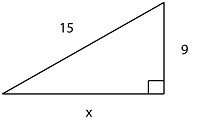
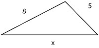
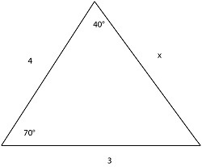
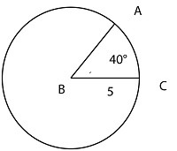
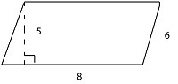
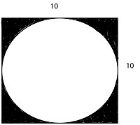

1
How long will you have to brainstorm, organize, and fully write the SAT essay?
Choose one answer.
| a. 15 minutes | ||
| b. 20 minutes | ||
| c. 25 minutes | ||
| d. 30 minutes |
Question
2
On the SAT, how many answers should you eliminate to have a better than random chance of choosing the correct answer?
Choose one answer.
| a. 1 answer | ||
| b. 2 answers | ||
| c. 3 answers | ||
| d. 4 answers |
Question
3
When answering questions related to the reading passages in the Critical Reading section, you should consider which of the following strategies about the
order of the answers?
Choose one answer.
| a. Remember that the answers are listed from easiest to most difficult. | ||
| b. Remember that the answers are listed by question type (e.g. main idea, vocabulary in context, line questions, etc.). | ||
| c. Remember that the order in which the answers appear are in the same order as they appear in the text. | ||
| d. Remember that the answers are listed from the most difficult to the easiest. |
Question
4
Which of the following is NOT a good way to choose an answer for the two-word sentence completions?
Choose one answer.
| a. Look for clues, such as phrases defining the missing words, in the sentence. | ||
| b. Read the sentence and think of basic words to fill in the blanks before looking at the answers. | ||
| c. Look for relationships between the missing words (positive/negative, antonyms/synonyms, etc.). | ||
| d. Find the word that fits best in the first blank, choose it, and move on quickly. |
Question
5
Which of the following mistakes do you need to watch for in improving sentences questions?
Choose one answer.
| a. Redundancy | ||
| b. Passive voice | ||
| c. Misplaced or dangling modifiers | ||
| d. All of these answers |
Question
6
An incorrect answer on the SAT has what impact on your score?
Choose one answer.
| a. None | ||
| b. - 1/4 point | ||
| c. - 1/2 point | ||
| d. - 1 point |
Question
7
A semicolon is used to combine which of the following?
Choose one answer.
| a. A dependent clause with another dependent clause | ||
| b. A dependent clause with an independent clause | ||
| c. Two closely-related independent clauses | ||
| d. Any two independent clauses |
Question
8
For the equation y = 5x + 2, what is 5?
Choose one answer.
| a. Function | ||
| b. Y-intercept | ||
| c. Slope | ||
| d. Input |
Question
9
Integers include which of the following numbers?
Choose one answer.
| a. Essentially any value on a continuous number line | ||
| b. Whole numbers only, including zero and negative numbers | ||
| c. Whole numbers only, excluding negative numbers and zero | ||
| d. Any number except for zero |
Question
10
Real numbers include which of the following numbers?
Choose one answer.
| a. Essentially any value on a continuous number line | ||
| b. Whole numbers only | ||
| c. Any number except for zero | ||
| d. Any number except for roots and fractions |
Question
11
What is a multiple of the number 20?
Choose one answer.
| a. The result of multiplying 20 by any integer | ||
| b. A number that 20 can be divided by without a remainder | ||
| c. Any numbers that equal 20 when multiplied | ||
| d. Any number less than 20 and divisible by 2 |
Question
12
When you first read over a Critical Reading passage before looking at the questions, what should you look for?
Choose one answer.
| a. Context, main idea, and purpose/tone | ||
| b. Specific details which will be asked about | ||
| c. Overall organization of the text | ||
| d. Your own thoughts on the author's ideas and premises |
Question
13
Which of the following is equal to  ?
?
Choose one answer.
| a. | ||
| b. | ||
|
c. |
||
|
d. |
Question
14
Which type of answer in the Critical Reading section should be avoided?
Choose one answer.
| a. Short answers | ||
| b. Answers that contain extreme opinions or absolutes | ||
| c. Answers that closely match what is written in the text | ||
| d. Answers that are very neutral and bland |
Question
15
Despite his _____, Bob will _____ go to the party. Based on the clues in this sentence, what is the relationship of the words that will correctly fill in
the two blanks?
Choose one answer.
| a. The two words will be related and will lead the reader to a common conclusion. | ||
| b. The two words will be unrelated, as the first and second parts of the sentence are unrelated. | ||
| c. The two words will be opposites and will lead the reader to opposite conclusions. | ||
| d. It is impossible to determine anything from this information. |
Question
16
I enjoyed the sights in Italy more than Spain. This sentence shows which type of error?
Choose one answer.
| a. Incorrect comparison | ||
| b. Subject-verb disagreement | ||
| c. Misplaced modifier | ||
| d. No error |
Question
17
Nodding emphatically, his hat fell off his head. This sentence shows which type of error?
Choose one answer.
| a. Passive voice | ||
| b. Incorrect comparison | ||
| c. Dangling modifier | ||
| d. No error |
Question
18
The length of an arc in a circle is found using which equation?
Choose one answer.
| a. 2∏ r/ 360˚ | ||
| b. n˚/2∏r | ||
| c. (n˚/360˚) 2∏r | ||
| d. (360˚ - n˚) ∏D |
Question
19
The side lengths of a 30-60-90 triangle are in what proportion?
Choose one answer.
| a. 1, 2,√3 | ||
| b. 1, 2, 2√3 | ||
| c. 1, 1, √2 | ||
| d. 1, 1, √3 |
Question
20
Michael likes to eat, singing, and runs daily. This sentence shows which type of error?
Choose one answer.
| a. There is an adjective without an adverb. | ||
| b. The verb is placed at the end of the sentence. | ||
| c. The sentence is written in passive voice. | ||
| d. The verbs in the list are not written in parallel form. |
Question
21
Develop an algebraic equation to solve the following word problem. 50 is 125% of what number?
Choose one answer.
| a. 25 | ||
| b. 30 | ||
| c. 40 | ||
| d. 75 |
Question
22
John has 2 pairs of black pants, 1 pair of navy pants, 2 pairs of brown pants, 3 pairs of black shoes, and 1 pair of brown shoes in his closet. If he
selects his pants and shoes randomly, then what is the probability that he will wear black pants with brown shoes?
Choose one answer.
| a. 3/20 | ||
| b. 13/20 | ||
| c. 6/10 | ||
| d. 1/7 |
Question
23
Juan, Marta, Tom, and Erica all took a difficult test. Erica bet the rest of them that her score would be higher than the average of their scores. Juan got
a 75, Marta got a 70, Tom got a 98, and Erica got an 80. Did Erica win the bet? Why, or why not?
Choose one answer.
| a. Yes, because the average score was 75, which is less than Erica's score. | ||
| b. No, because the average score was 80.75, which was slightly more than Erica's score. | ||
| c. Yes, because the average score was 78.5, which is less than Erica's score. | ||
| d. No, because the average score was 80, which is equal to Erica's score. |
Question
24
Robbie is 3 times taller than his little brother Nick. Jane is two inches taller than Nick. If you know that Robbie is 75 inches tall, then which equation
could you use to find Jane's height (x)?
Choose one answer.
| a. 75 - 2(3) = x | ||
| b. 75(3) - 2 = x | ||
| c. 75 + 3x = 2 | ||
| d. (75/3) + 2 = x |
Question
25
What is the range of the function f(x) = 15y - 25, when x is an integer greater than zero?
Choose one answer.
| a. y ≥ 2 | ||
| b. y ≤ 1 | ||
| c. y > -3 | ||
| d. y = 0 |
Question
26
What is the slope of the equation 2y = 6x + 4?
Choose one answer.
| a. 2 | ||
| b. 3 | ||
| c. 4 | ||
| d. 6 |
Question
27
Which of the following falls outside of the domain of the function f(x) = (2y +15) / (25y - 50)?
Choose one answer.
| a. y = 0 | ||
| b. y < 2 | ||
| c. y = 2 | ||
| d. y > 3 |
Question
28
Which of the following is a prime factor of x/2 when x = 44?
Choose one answer.
| a. 7 | ||
| b. 11 | ||
| c. 13 | ||
| d. 22 |
Question
29
Which of the following lists all of the factors of the number 12?
Choose one answer.
| a. 1, 2, 3, 4, 6, 12 | ||
| b. 2, 3, 4, 6 | ||
| c. 12, 24, 36, 48, 60 | ||
| d. 6, 12, 18, 24, 36 |
Question
30
Which of the following shows the equation x = 2y - 2x + 3, solved for y in terms of x?
Choose one answer.
| a. (4x-3)/2 | ||
| b. 2y-x+3 | ||
| c. x+3 | ||
| d. (2y+3)/2 |
Question
31
Which of the following solves the equation 40d + (25a / 3) = 4b - 25 + c for d, in terms of a, b, and c?
Choose one answer.
| a. 4b - 25 + c | ||
| b. (12b - 75a + 3c -75) / 120 | ||
| c. (4b + c) / 120 | ||
| d. (a + 4b + c) / 25 |
Question
32
There are 4 yellow balls, 6 red balls, and 2 green balls in a bag. If you pick one ball at random, then what is the probability you will pick a red ball?
Choose one answer.
| a. 10/12 | ||
| b. 5/7 | ||
| c. 1/2 | ||
| d. 1/3 |
Question
33
Based on the diagram below, what is the value of x?

Choose one answer.
| a. 9 | ||
| b. 12 | ||
| c. 15 | ||
| d. 18 |
Question
34
Based on the diagram below, what is the value of x?

Choose one answer.
| a. 10 | ||
| b. 13 | ||
| c. 15 | ||
| d. 18 |
Question
35
Based on the diagram below, what is the value of x?

Choose one answer.
| a. 2 | ||
| b. 3 | ||
| c. 4 | ||
| d. 5 |
Question
36
If 8a + 3b = 25 and 5a - b = 7, then what is the value of 4a - 2b?
Choose one answer.
| a. 2 | ||
| b. 4 | ||
| c. 5 | ||
| d. 8 |
Question
37
If a, b, c, and d are all positive integers, and 4a + 2b = 10 + c, 2cd = 30b + 3a, and 12a = db, then what is the value of d + a?
Choose one answer.
| a. 4 | ||
| b. 8 | ||
| c. 10 | ||
| d. 12 |
Question
38
If Bob and Larry work together to clean the house, it takes them 4 hours to finish the job. Bob works twice as fast as Larry. How long would it take each
of them to finish the job alone?
Choose one answer.
| a. Bob - 4 hours; Larry - 8 hours | ||
| b. Bob - 5 hours; Larry - 10 hours | ||
| c. Bob - 6 hours; Larry - 9 hours | ||
| d. Bob - 6 hours; Larry - 12 hours |
Question
39
If f(x) = 2x / 3 and g(x) = 2x + 3, then what is f(g(x)) when x = 3?
Choose one answer.
| a. 3 | ||
| b. 5 | ||
| c. 6 | ||
| d. 9 |
Question
40
If Mary has 8 skirts, 12 blouses, and 3 pairs of pants, how many different outfits (of a skirt and a blouse or pants and a blouse) can she put together?
Choose one answer.
| a. 11 | ||
| b. 12 | ||
| c. 23 | ||
| d. 132 |
Question
41
If x☺y = 2x+5y+3 for all values of x and y, what is the value of 5☺3?
Choose one answer.
| a. 8 | ||
| b. 15 | ||
| c. 25 | ||
| d. 28 |
Question
42
Jai and Anna are assigned to work together on a project. Jai can complete the entire project alone in 3 hours, while Anna can take 5 hours to complete the
project alone. If Jai and Anna work together at their individual speeds, then how quickly can they complete the project?
Choose one answer.
| a. 1 1/2 hours | ||
| b. 1 7/8 hours | ||
| c. 2 1/2 hours | ||
| d. 2 3/5 hours |
Question
43
What is the area of sector ABC?

Choose one answer.
| a. 5∏ | ||
| b. 25∏ | ||
| c. 25∏ / 9 | ||
| d. 25∏ / 5 |
Question
44
What is the area of the parallelogram below?

Choose one answer.
| a. 20 | ||
| b. 30 | ||
| c. 40 | ||
| d. 48 |
Question
45
What is the length of the arc of the sector indicated by x?

Choose one answer.
| a. 10∏ / 9 | ||
| b. 25∏ / 9 | ||
| c. 10∏ / 5 | ||
| d. 25∏ / 5 |
Question
46
Which of the following is a function that could provide the following output?

Choose one answer.
| a. x+1 | ||
| b. x+2x | ||
| c. x2 - 1 | ||
| d. 2x - 1 |
Question
47
You have 12 balls in a box. Four are yellow, 3 are blue, and 5 are red. If you choose two balls at random, then what is the probability that you will first
pick a yellow ball and then pick a red ball?
Choose one answer.
| a. 4/12 | ||
| b. 9/12 | ||
| c. 5/33 | ||
| d. 5/36 |
Question
48
A combination lock uses three digits at a time as its combination. Each digit used in the combination may range from 1 to 5. How many possible combinations
are there for this lock?
Choose one answer.
| a. 15 | ||
| b. 125 | ||
| c. 1500 | ||
| d. 2730 |
Question
49
Alice, James, Bria, Tyra, Philip, and Richard are working together on a challenging, time-consuming school project. They need to break down into pairs to
work on tasks in order to complete the project on time. How many different ways can these students pair up?
Choose one answer.
| a. 3 | ||
| b. 6 | ||
| c. 15 | ||
| d. 20 |
Question
50
At what point do the lines of the equations 4x + y = 2 and x - y = 3 intersect?
Choose one answer.
| a. (0, 0) | ||
| b. (1, -2) | ||
| c. (3, 2) | ||
| d. (2, 3) |
Question
51
Solve y = x^2 + 3x + 2 for x.
Choose one answer.
| a. x = -2 or -1 | ||
| b. x = 0 | ||
| c. x = 5 or 6 | ||
| d. x = 1 or 2 |
Question
52
What is g(x) in terms of f(x)?

Choose one answer.
| a. f(x-4)+1 | ||
| b. f(x+4) | ||
| c. f(x)+1 | ||
| d. f(-x) |
Question
53
What is the 11th term in the sequence 1, 2, 4, 8, …?
Choose one answer.
| a. 22 | ||
| b. 121 | ||
| c. 1024 | ||
| d. 2222 |
Question
54
What is the 23rd term in the sequence 3, 7, 11, 15, 19, …?
Choose one answer.
| a. 69 | ||
| b. 77 | ||
| c. 91 | ||
| d. 123 |
Question
55
What is the area of the shaded portion of this figure?

Choose one answer.
| a. 100 | ||
| b. 100 - 25∏ | ||
| c. 100∏ - 10 | ||
| d. 100 - 10∏ |
Question
56
What is the area of the shaded portion of this figure?

Choose one answer.
| a. √3 | ||
| b. 2 √3 | ||
| c. 3 √2 | ||
| d. 4 √2 |
Question
57
What is the circumference of the circle below?

Choose one answer.
| a. 3∏ | ||
| b. 6∏ | ||
| c. 2∏ - 1 | ||
| d. 25∏ |
Question
58
What is the value of the angle indicated by x in the polygon below?

Choose one answer.
| a. 30 | ||
| b. 45 | ||
| c. 60 | ||
| d. 72 |
Question
59
What values of x are in the domain of the function f(x) = x^2 - 64?
Choose one answer.
| a. 8, -8 | ||
| b. 0, 8 | ||
| c. 0, -8 | ||
| d. Infinite |
Question
60
You have two boxes which can hold a total of 64 ft2 of material together. What is the average length of each side of each box?
Choose one answer.
| a. 2 feet | ||
| b. 4 feet | ||
| c. 6 feet | ||
| d. 8 feet |
Please refer to this passage for the next three questions.
"The Adventure of the Devil's Foot" by Sir Arthur Conan Doyle
(1) These were the two men who entered abruptly into our little sitting-room on Tuesday, March the 16th, shortly after our breakfast hour, as we were smoking together, preparatory to our daily excursion upon the moors.
(2) "Mr. Holmes," said the vicar in an agitated voice, "the most extraordinary and tragic affair has occurred during the night. (3) It is the most unheard-of business. (4) We can only regard it as a special Providence that you should chance to be here at the time, for in all England you are the one man we need."
(5) I glared at the intrusive vicar with no very friendly eyes; but Holmes took his pipe from his lips and sat up in his chair like an old hound who hears the view-halloa. (6) He waved his hand to the sofa, and our palpitating visitor with his agitated companion sat side by side upon it. (7) Mr. Mortimer Tregennis was more self-contained than the clergyman, but the twitching of his thin hands and the brightness of his dark eyes showed that they shared a common emotion.
(8) "Shall I speak or you?" he asked of the vicar.
(9) "Well, as you seem to have made the discovery, whatever it may be, and the vicar to have had it second-hand, perhaps you had better do the speaking," said Holmes.
(10) I glanced at the hastily clad clergyman, with the formally dressed lodger seated beside him, and was amused at the surprise which Holmes's simple deduction had brought to their faces.
(11) "Perhaps I had best say a few words first," said the vicar, "and then you can judge if you will listen to the details from Mr. Tregennis, or whether we should not hasten at once to the scene of this mysterious affair. (12) I may explain, then, that our friend here spent last evening in the company of his two brothers, Owen and George, and of his sister Brenda, at their house of Tredannick Wartha, which is near the old stone cross upon the moor. (13) He left them shortly after ten o'clock, playing cards round the dining-room table, in excellent health and spirits. (14) This morning, being an early riser, he walked in that direction before breakfast and was overtaken by the carriage of Dr. Richards, who explained that he had just been sent for on a most urgent call to Tredannick Wartha. (15) Mr. Mortimer Tregennis naturally went with him. (16) When he arrived at Tredannick Wartha he found an extraordinary state of things. (17) His two brothers and his sister were seated round the table exactly as he had left them, the cards still spread in front of them and the candles burned down to their sockets. (18) The sister lay back stone-dead in her chair, while the two brothers sat on each side of her laughing, shouting, and singing, the senses stricken clean out of them. (19) All three of them, the dead woman and the two demented men, retained upon their faces an expression of the utmost horror-a convulsion of terror which was dreadful to look upon. (20) There was no sign of the presence of anyone in the house, except Mrs. Porter, the old cook and housekeeper, who declared that she had slept deeply and heard no sound during the night. (21) Nothing had been stolen or disarranged, and there is absolutely no explanation of what the horror can be which has frightened a woman to death and two strong men out of their senses. (22) There is the situation, Mr. Holmes, in a nutshell, and if you can help us to clear it up you will have done a great work."
(23) I had hoped that in some way I could coax my companion back into the quiet which had been the object of our journey; but one glance at his intense face and contracted eyebrows told me how vain was now the expectation. (24) He sat for some little time in silence, absorbed in the strange drama which had broken in upon our peace.
(25) "I will look into this matter," he said at last. (26) "On the face of it, it would appear to be a case of a very exceptional nature. (27) Have you been there yourself, Mr. Roundhay?"
(28) "No, Mr. Holmes. (29) Mr. Tregennis brought back the account to the vicarage, and I at once hurried over with him to consult you."
(29) "How far is it to the house where this singular tragedy occurred?"
(30) "About a mile inland."
(31) "Then we shall walk over together. (32) But before we start I must ask you a few question, Mr. Mortimer Tregennis."
(33) The other had been silent all this time, but I had observed that his more controlled excitement was even greater than the obtrusive emotion of the clergyman. (34) He sat with a pale, drawn face, his anxious gaze fixed upon Holmes, and his thin hands clasped convulsively together. (35) His pale lips quivered as he listened to the dreadful experience which had befallen his family, and his dark eyes seemed to reflect something of the horror of the scene.
(36) "Ask what you like, Mr. Holmes," said he eagerly. (37) "It is a bad thing to speak of, but I will answer you the truth."
"The Adventure of the Devil's Foot" by Sir Arthur Conan Doyle
(1) These were the two men who entered abruptly into our little sitting-room on Tuesday, March the 16th, shortly after our breakfast hour, as we were smoking together, preparatory to our daily excursion upon the moors.
(2) "Mr. Holmes," said the vicar in an agitated voice, "the most extraordinary and tragic affair has occurred during the night. (3) It is the most unheard-of business. (4) We can only regard it as a special Providence that you should chance to be here at the time, for in all England you are the one man we need."
(5) I glared at the intrusive vicar with no very friendly eyes; but Holmes took his pipe from his lips and sat up in his chair like an old hound who hears the view-halloa. (6) He waved his hand to the sofa, and our palpitating visitor with his agitated companion sat side by side upon it. (7) Mr. Mortimer Tregennis was more self-contained than the clergyman, but the twitching of his thin hands and the brightness of his dark eyes showed that they shared a common emotion.
(8) "Shall I speak or you?" he asked of the vicar.
(9) "Well, as you seem to have made the discovery, whatever it may be, and the vicar to have had it second-hand, perhaps you had better do the speaking," said Holmes.
(10) I glanced at the hastily clad clergyman, with the formally dressed lodger seated beside him, and was amused at the surprise which Holmes's simple deduction had brought to their faces.
(11) "Perhaps I had best say a few words first," said the vicar, "and then you can judge if you will listen to the details from Mr. Tregennis, or whether we should not hasten at once to the scene of this mysterious affair. (12) I may explain, then, that our friend here spent last evening in the company of his two brothers, Owen and George, and of his sister Brenda, at their house of Tredannick Wartha, which is near the old stone cross upon the moor. (13) He left them shortly after ten o'clock, playing cards round the dining-room table, in excellent health and spirits. (14) This morning, being an early riser, he walked in that direction before breakfast and was overtaken by the carriage of Dr. Richards, who explained that he had just been sent for on a most urgent call to Tredannick Wartha. (15) Mr. Mortimer Tregennis naturally went with him. (16) When he arrived at Tredannick Wartha he found an extraordinary state of things. (17) His two brothers and his sister were seated round the table exactly as he had left them, the cards still spread in front of them and the candles burned down to their sockets. (18) The sister lay back stone-dead in her chair, while the two brothers sat on each side of her laughing, shouting, and singing, the senses stricken clean out of them. (19) All three of them, the dead woman and the two demented men, retained upon their faces an expression of the utmost horror-a convulsion of terror which was dreadful to look upon. (20) There was no sign of the presence of anyone in the house, except Mrs. Porter, the old cook and housekeeper, who declared that she had slept deeply and heard no sound during the night. (21) Nothing had been stolen or disarranged, and there is absolutely no explanation of what the horror can be which has frightened a woman to death and two strong men out of their senses. (22) There is the situation, Mr. Holmes, in a nutshell, and if you can help us to clear it up you will have done a great work."
(23) I had hoped that in some way I could coax my companion back into the quiet which had been the object of our journey; but one glance at his intense face and contracted eyebrows told me how vain was now the expectation. (24) He sat for some little time in silence, absorbed in the strange drama which had broken in upon our peace.
(25) "I will look into this matter," he said at last. (26) "On the face of it, it would appear to be a case of a very exceptional nature. (27) Have you been there yourself, Mr. Roundhay?"
(28) "No, Mr. Holmes. (29) Mr. Tregennis brought back the account to the vicarage, and I at once hurried over with him to consult you."
(29) "How far is it to the house where this singular tragedy occurred?"
(30) "About a mile inland."
(31) "Then we shall walk over together. (32) But before we start I must ask you a few question, Mr. Mortimer Tregennis."
(33) The other had been silent all this time, but I had observed that his more controlled excitement was even greater than the obtrusive emotion of the clergyman. (34) He sat with a pale, drawn face, his anxious gaze fixed upon Holmes, and his thin hands clasped convulsively together. (35) His pale lips quivered as he listened to the dreadful experience which had befallen his family, and his dark eyes seemed to reflect something of the horror of the scene.
(36) "Ask what you like, Mr. Holmes," said he eagerly. (37) "It is a bad thing to speak of, but I will answer you the truth."
Question
61
As used in line 2, what does the word "agitated" most nearly mean?
Choose one answer.
| a. Shaken | ||
| b. Itchy | ||
| c. Excited | ||
| d. Annoyed |
Question
62
Complete the following sentence. The narrator's initial reaction to the presence of the vicar is one of:
Choose one answer.
| a. friendliness. | ||
| b. annoyance. | ||
| c. rage. | ||
| d. neutrality. |
Question
63
Complete the following statement. In line 34, Tregennis' "pale, drawn face" suggests that:
Choose one answer.
| a. he was recovering from an extended illness. | ||
| b. he was upset by what he had seen. | ||
| c. he suffered from anemia. | ||
| d. he was naturally an unattractive man. |
Question
64
Complete the following statement. The vicar's story suggests that:
Choose one answer.
| a. Tregennis was involved in a murder. | ||
| b. Tregennis' siblings saw something very frightening. | ||
| c. Tregennis' friends are criminals. | ||
| d. Tregennis happened upon a crime scene in an area unknown to him. |
Question
65
The author compares Holmes to "an old hound who hears the view-halloa" in order to do which of the following?
Choose one answer.
| a. Demonstrate Holmes' eagerness to hear the story | ||
| b. Denigrate Holmes' character | ||
| c. Compare Holmes' physical movements to those of a dog | ||
| d. Elicit an illusion of Holmes as superhuman |
Question
66
Complete the following sentence. Although Miriam had eaten only two hours ago, she was:
Choose one answer.
| a. voracious. | ||
| b. satisfied. | ||
| c. explicit. | ||
| d. corpulent. |
Question
67
Complete the following sentence. Tom was typically very quiet; today he surprised everyone with his:
Choose one answer.
| a. reticence | ||
| b. timidity | ||
| c. loquacity | ||
| d. presence |
Question
68
Fill in the blanks. Despite the ________ quality of the work Janine had done for her company, she was ________ a promotion.
Choose one answer.
| a. chimerical; denied | ||
| b. consistent; given | ||
| c. meticulous; provided | ||
| d. erratic; bestowed |
Question
69
Fill in the blanks. The ________ music in the coffeehouse created an ________ atmosphere for working.
Choose one answer.
| a. harmonious; upsetting | ||
| b. cacophonous; unsatisfactory | ||
| c. strident; easy | ||
| d. beautiful; unpleasant |
Question
70
Fill in the blanks. The ________ old man had a variety of _______.
Choose one answer.
| a. eccentric; idiosyncrasies | ||
| b. friendly; mendicants | ||
| c. poor; neophytes | ||
| d. affable; enigmas |
Please refer to this passage for the next five questions.
"Notes from the Underground" by Fyodor Dostoyevsky
(1) I am a sick man. (2) ... I am a spiteful man. (3) I am an unattractive man. (4) I believe my liver is diseased. (5) However, I know nothing at all about my disease, and do not know for certain what ails me. (6) I don't consult a doctor for it, and never have, though I have a respect for medicine and doctors. (7) Besides, I am extremely superstitious, sufficiently so to respect medicine, anyway (I am well-educated enough not to be superstitious, but I am superstitious). (8) No, I refuse to consult a doctor from spite. (9) That you probably will not understand. (10) Well, I understand it, though. (11) Of course, I can't explain who it is precisely that I am mortifying in this case by my spite: I am perfectly well aware that I cannot "pay out" the doctors by not consulting them; I know better than anyone that by all this I am only injuring myself and no one else. (12) But still, if I don't consult a doctor it is from spite. (13) My liver is bad, well-let it get worse!
(14) I have been going on like that for a long time-twenty years. (15) Now I am forty. (16) I used to be in the government service, but am no longer. (17) I was a spiteful official. (18) I was rude and took pleasure in being so. (19) I did not take bribes, you see, so I was bound to find a recompense in that, at least. (20) (A poor jest, but I will not scratch it out. I wrote it thinking it would sound very witty; but now that I have seen myself that I only wanted to show off in a despicable way, I will not scratch it out on purpose!)
(21) When petitioners used to come for information to the table at which I sat, I used to grind my teeth at them, and felt intense enjoyment when I succeeded in making anybody unhappy. (22) I almost did succeed. (23) For the most part they were all timid people-of course, they were petitioners. (24) But of the uppish ones there was one officer in particular I could not endure. (25) He simply would not be humble, and clanked his sword in a disgusting way. (26) I carried on a feud with him for eighteen months over that sword. (27) At last I got the better of him. (28) He left off clanking it. (29) That happened in my youth, though. (30) But do you know, gentlemen, what was the chief point about my spite? (31) Why, the whole point, the real sting of it lay in the fact that continually, even in the moment of the acutest spleen, I was inwardly conscious with shame that I was not only not a spiteful but not even an embittered man, that I was simply scaring sparrows at random and amusing myself by it. (32) I might foam at the mouth, but bring me a doll to play with, give me a cup of tea with sugar in it, and maybe I should be appeased. (33) I might even be genuinely touched, though probably I should grind my teeth at myself afterwards and lie awake at night with shame for months after.
(34) That was my way.
(35) I was lying when I said just now that I was a spiteful official. (36) I was lying from spite. (37) I was simply amusing myself with the petitioners and with the officer, and in reality I never could become spiteful. (38) I was conscious every moment in myself of many, very many elements absolutely opposite to that. (39) I felt them positively swarming in me, these opposite elements. (40) I knew that they had been swarming in me all my life and craving some outlet from me, but I would not let them, would not let them, purposely would not let them come out. (41) They tormented me till I was ashamed: they drove me to convulsions and-sickened me, at last, how they sickened me! (42) Now, are not you fancying, gentlemen, that I am expressing remorse for something now, that I am asking your forgiveness for something? (43) I am sure you are fancying that ... (44) However, I assure you I do not care if you are. ...
(45) It was not only that I could not become spiteful, I did not know how to become anything; neither spiteful nor kind, neither a rascal nor an honest man, neither a hero nor an insect. (46) Now, I am living out my life in my corner, taunting myself with the spiteful and useless consolation that an intelligent man cannot become anything seriously, and it is only the fool who becomes anything. (47) Yes, a man in the nineteenth century must and morally ought to be pre-eminently a characterless creature; a man of character, an active man is pre-eminently a limited creature. (48) That is my conviction of forty years. (49) I am forty years old now, and you know forty years is a whole lifetime; you know it is extreme old age. (50) To live longer than forty years is bad manners, is vulgar, immoral. (51) Who does live beyond forty? (52) Answer that, sincerely and honestly I will tell you who do: fools and worthless fellows. (53) I tell all old men that to their face, all these venerable old men, all these silver-haired and reverend seniors! (54) I tell the whole world that to its face! I have a right to say so, for I shall go on living to sixty myself. (55) To seventy! (56) To eighty! ... (57) Stay, let me take breath ...
(58) You imagine no doubt, gentlemen, that I want to amuse you. (59) You are mistaken in that, too. (60) I am by no means such a mirthful person as you imagine, or as you may imagine; however, irritated by all this babble (and I feel that you are irritated) you think fit to ask me who I am-then my answer is, I am a collegiate assessor. (61) I was in the service that I might have something to eat (and solely for that reason), and when last year a distant relation left me six thousand roubles in his will I immediately retired from the service and settled down in my corner. (62) I used to live in this corner before, but now I have settled down in it. (63) My room is a wretched, horrid one in the outskirts of the town. (64) My servant is an old country- woman, ill-natured from stupidity, and, moreover, there is always a nasty smell about her. I am told that the Petersburg climate is bad for me, and that with my small means it is very expensive to live in Petersburg. (65) I know all that better than all these sage and experienced counsellors and monitors. ... (66) But I am remaining in Petersburg; I am not going away from Petersburg! (67) I am not going away because ... ech! (68) Why, it is absolutely no matter whether I am going away or not going away.
(69) But what can a decent man speak of with most pleasure?
(70) Answer: Of himself.
(71) Well, so I will talk about myself.
"Notes from the Underground" by Fyodor Dostoyevsky
(1) I am a sick man. (2) ... I am a spiteful man. (3) I am an unattractive man. (4) I believe my liver is diseased. (5) However, I know nothing at all about my disease, and do not know for certain what ails me. (6) I don't consult a doctor for it, and never have, though I have a respect for medicine and doctors. (7) Besides, I am extremely superstitious, sufficiently so to respect medicine, anyway (I am well-educated enough not to be superstitious, but I am superstitious). (8) No, I refuse to consult a doctor from spite. (9) That you probably will not understand. (10) Well, I understand it, though. (11) Of course, I can't explain who it is precisely that I am mortifying in this case by my spite: I am perfectly well aware that I cannot "pay out" the doctors by not consulting them; I know better than anyone that by all this I am only injuring myself and no one else. (12) But still, if I don't consult a doctor it is from spite. (13) My liver is bad, well-let it get worse!
(14) I have been going on like that for a long time-twenty years. (15) Now I am forty. (16) I used to be in the government service, but am no longer. (17) I was a spiteful official. (18) I was rude and took pleasure in being so. (19) I did not take bribes, you see, so I was bound to find a recompense in that, at least. (20) (A poor jest, but I will not scratch it out. I wrote it thinking it would sound very witty; but now that I have seen myself that I only wanted to show off in a despicable way, I will not scratch it out on purpose!)
(21) When petitioners used to come for information to the table at which I sat, I used to grind my teeth at them, and felt intense enjoyment when I succeeded in making anybody unhappy. (22) I almost did succeed. (23) For the most part they were all timid people-of course, they were petitioners. (24) But of the uppish ones there was one officer in particular I could not endure. (25) He simply would not be humble, and clanked his sword in a disgusting way. (26) I carried on a feud with him for eighteen months over that sword. (27) At last I got the better of him. (28) He left off clanking it. (29) That happened in my youth, though. (30) But do you know, gentlemen, what was the chief point about my spite? (31) Why, the whole point, the real sting of it lay in the fact that continually, even in the moment of the acutest spleen, I was inwardly conscious with shame that I was not only not a spiteful but not even an embittered man, that I was simply scaring sparrows at random and amusing myself by it. (32) I might foam at the mouth, but bring me a doll to play with, give me a cup of tea with sugar in it, and maybe I should be appeased. (33) I might even be genuinely touched, though probably I should grind my teeth at myself afterwards and lie awake at night with shame for months after.
(34) That was my way.
(35) I was lying when I said just now that I was a spiteful official. (36) I was lying from spite. (37) I was simply amusing myself with the petitioners and with the officer, and in reality I never could become spiteful. (38) I was conscious every moment in myself of many, very many elements absolutely opposite to that. (39) I felt them positively swarming in me, these opposite elements. (40) I knew that they had been swarming in me all my life and craving some outlet from me, but I would not let them, would not let them, purposely would not let them come out. (41) They tormented me till I was ashamed: they drove me to convulsions and-sickened me, at last, how they sickened me! (42) Now, are not you fancying, gentlemen, that I am expressing remorse for something now, that I am asking your forgiveness for something? (43) I am sure you are fancying that ... (44) However, I assure you I do not care if you are. ...
(45) It was not only that I could not become spiteful, I did not know how to become anything; neither spiteful nor kind, neither a rascal nor an honest man, neither a hero nor an insect. (46) Now, I am living out my life in my corner, taunting myself with the spiteful and useless consolation that an intelligent man cannot become anything seriously, and it is only the fool who becomes anything. (47) Yes, a man in the nineteenth century must and morally ought to be pre-eminently a characterless creature; a man of character, an active man is pre-eminently a limited creature. (48) That is my conviction of forty years. (49) I am forty years old now, and you know forty years is a whole lifetime; you know it is extreme old age. (50) To live longer than forty years is bad manners, is vulgar, immoral. (51) Who does live beyond forty? (52) Answer that, sincerely and honestly I will tell you who do: fools and worthless fellows. (53) I tell all old men that to their face, all these venerable old men, all these silver-haired and reverend seniors! (54) I tell the whole world that to its face! I have a right to say so, for I shall go on living to sixty myself. (55) To seventy! (56) To eighty! ... (57) Stay, let me take breath ...
(58) You imagine no doubt, gentlemen, that I want to amuse you. (59) You are mistaken in that, too. (60) I am by no means such a mirthful person as you imagine, or as you may imagine; however, irritated by all this babble (and I feel that you are irritated) you think fit to ask me who I am-then my answer is, I am a collegiate assessor. (61) I was in the service that I might have something to eat (and solely for that reason), and when last year a distant relation left me six thousand roubles in his will I immediately retired from the service and settled down in my corner. (62) I used to live in this corner before, but now I have settled down in it. (63) My room is a wretched, horrid one in the outskirts of the town. (64) My servant is an old country- woman, ill-natured from stupidity, and, moreover, there is always a nasty smell about her. I am told that the Petersburg climate is bad for me, and that with my small means it is very expensive to live in Petersburg. (65) I know all that better than all these sage and experienced counsellors and monitors. ... (66) But I am remaining in Petersburg; I am not going away from Petersburg! (67) I am not going away because ... ech! (68) Why, it is absolutely no matter whether I am going away or not going away.
(69) But what can a decent man speak of with most pleasure?
(70) Answer: Of himself.
(71) Well, so I will talk about myself.
Question
71
At the conclusion of the passage, the reader can assume which of the following?
Choose one answer.
| a. The narrator will continue with some stories about himself and his origins. | ||
| b. The narrator will continue to talk about the spite he felt toward others. | ||
| c. The narrator has finished his story for the time being. | ||
| d. The narrator is consumed by sickness and is on the way to the hospital. |
Question
72
Complete the following sentence. Lines 39-41 ("I felt . . . sickened me!") suggest that:
Choose one answer.
| a. the poor conditions of the narrator's job left him ill. | ||
| b. the narrator refused to let his own kind impulses show. | ||
| c. the narrator had a natural animosity toward others. | ||
| d. the narrator had a particular desire to see justice served. |
Question
73
Complete the following sentence. The author uses parentheses in line 20 ("A poor jest . . . on purpose!") to include information about:
Choose one answer.
| a. the thoughts of the narrator on his own writing. | ||
| b. the thoughts of the editor on the first draft he was given. | ||
| c. the thoughts of the reader as he or she reads the story. | ||
| d. thoughts unrelated to the events in the narrative. |
Question
74
Complete the following sentence. The narrator suggests that the reason he won't visit a doctor is because:
Choose one answer.
| a. he doesn't trust doctors. | ||
| b. he doesn't have enough money to pay. | ||
| c. of some anger or annoyance he has about the situation. | ||
| d. he is not ill. |
Question
75
Complete the following sentence. The narrator's attitude toward the reader expecting him to show regret is one of:
Choose one answer.
| a. sorrow. | ||
| b. penitence. | ||
| c. mirth. | ||
| d. defiance. |
Question
76
In the context of the passage, what does the word "insect" in line 45 most nearly mean?
Choose one answer.
| a. Bug | ||
| b. Pest or parasite | ||
| c. Vector of disease | ||
| d. Villain |
Question
77
The narrator suggests which of the following?
Choose one answer.
| a. Liver disease is incurable. | ||
| b. He has become bitter through negative life experiences. | ||
| c. In his job, he acted as if he were bitter, though he really was not bitter. | ||
| d. He currently lives a luxurious lifestyle. |
Question
78
What is the narrator's attitude toward his present surroundings?
Choose one answer.
| a. Positive | ||
| b. Negative | ||
| c. Neutral | ||
| d. Ambiguous |
Question
79
What is the primary purpose of this passage?
Choose one answer.
| a. To present a diatribe against doctors | ||
| b. To exemplify the typical attitude of government workers | ||
| c. To establish the motivations of the narrator of the story | ||
| d. To demonstrate how experience makes a person spiteful |
Question
80
Why was the narrator able to leave his job?
Choose one answer.
| a. Because he was fired due to customer complaints | ||
| b. Because he found another job he liked better | ||
| c. Because he was given a promotion | ||
| d. Because he inherited some money |
Question
81
Fill in the blank. Her extensive and varied resume showed she was a(n) ______, and although she had many years of work experience, she had not yet mastered
any particular trade.
Choose one answer.
| a. dilettante | ||
| b. laggard | ||
| c. ascetic | ||
| d. sycophant |
Question
82
Fill in the blanks. A(n) ______ of French art, Clara had critiqued ______ paintings by artists ranging from de Reimpré to Monet.
Choose one answer.
| a. critic; few | ||
| b. hedonist; many | ||
| c. connoisseur; an array of | ||
| d. artist; a dearth of |
Question
83
Fill in the blanks. Cholera and typhoid ran ______ in the early days of the Industrial Revolution, thanks to a ______ living environment for many workers.
Choose one answer.
| a. away; luxurious | ||
| b. noisome; spartan | ||
| c. licentious; diseased | ||
| d. rampant; squalid |
Question
84
Fill in the blanks. His serious ______ belied his ______ nature.
Choose one answer.
| a. expression; melancholy | ||
| b. banality; lugubrious | ||
| c. countenance; jocular | ||
| d. company; acquiescent |
Question
85
Fill in the blanks. More creative students may resent the ______ of the ______ instructional video.
Choose one answer.
| a. tone; amiable | ||
| b. didacticism; dogmatic | ||
| c. mendacity; simple | ||
| d. opprobrium; quixotic |
Question
86
Fill in the blanks. Ryan's ______ led him to look beyond Melissa's angelic ______ to her actual behavior before he placed any trust in her.
Choose one answer.
| a. perspicacity; platitudes | ||
| b. anger; melancholy | ||
| c. modicum; objectives | ||
| d. prudence; mirth |
Question
87
Fill in the blanks. The buffet provided a ______ of beautifully arranged but ______ foods; they were nicer to look at than to eat.
Choose one answer.
| a. nadir; delicious | ||
| b. list; palatable | ||
| c. plethora; repugnant | ||
| d. panacea; smelly |
Question
88
Fill in the blanks. The ______ punishment fit the ______ crime.
Choose one answer.
| a. baleful; minor | ||
| b. draconian; malicious | ||
| c. moribund; apocryphal | ||
| d. capacious; audacious |
Question
89
Fill in the blanks. Though currently ______ , the horned lizard has become a(n) ______ sight, due to eradication of its food source.
Choose one answer.
| a. proliferate; common | ||
| b. maligned; amiable | ||
| c. popular; unexpected | ||
| d. extant; rare |
Question
90
Fill in the blank. The politician ______ on his plans for tightly regulating stocks, while he was at the Wall Street fundraiser; he did not want to lie,
but he did not want to lose support for his candidacy either.
Choose one answer.
| a. prevaricated | ||
| b. mollified | ||
| c. quibbled | ||
| d. recanted |
Please refer to these passages for the next five questions.
"Three Men in a Boat" by Jerome K. Jerome
(1) There were four of us - George, and William Samuel Harris, and myself, and Montmorency. (2) We were sitting in my room, smoking, and talking about how bad we were - bad from a medical point of view I mean, of course.
(3) We were all feeling seedy, and we were getting quite nervous about it. (4) Harris said he felt such extraordinary fits of giddiness come over him at times, that he hardly knew what he was doing; and then George said that HE had fits of giddiness too, and hardly knew what HE was doing. (5) With me, it was my liver that was out of order. (6) I knew it was my liver that was out of order, because I had just been reading a patent liver-pill circular, in which were detailed the various symptoms by which a man could tell when his liver was out of order. (7) I had them all.
(8) It is a most extraordinary thing, but I never read a patent medicine advertisement without being impelled to the conclusion that I am suffering from the particular disease therein dealt with in its most virulent form. (9) The diagnosis seems in every case to correspond exactly with all the sensations that I have ever felt.
(10) I remember going to the British Museum one day to read up the treatment for some slight ailment of which I had a touch - hay fever, I fancy it was. (11) I got down the book, and read all I came to read; and then, in an unthinking moment, I idly turned the leaves, and began to indolently study diseases, generally. (12) I forget which was the first distemper I plunged into - some fearful, devastating scourge, I know - and, before I had glanced half down the list of "premonitory symptoms," it was borne in upon me that I had fairly got it.
(13) I sat for awhile, frozen with horror; and then, in the listlessness of despair, I again turned over the pages. (14) I came to typhoid fever - read the symptoms - discovered that I had typhoid fever, must have had it for months without knowing it - wondered what else I had got; turned up St. Vitus's Dance - found, as I expected, that I had that too, - began to get interested in my case, and determined to sift it to the bottom, and so started alphabetically - read up ague, and learnt that I was sickening for it, and that the acute stage would commence in about another fortnight. (15) Bright's disease, I was relieved to find, I had only in a modified form, and, so far as that was concerned, I might live for years. (16) Cholera I had, with severe complications; and diphtheria I seemed to have been born with. (17) I plodded conscientiously through the twenty-six letters, and the only malady I could conclude I had not got was housemaid's knee.
"Plutarch's Morals: On Whether Disorders of the Mind or Body Are Worse" by Plutarch
(1) The fox in Æsop313 disputing with the leopard as to their respective claims to variety, the latter showed its body and appearance all bright and spotted, while the tawny skin of the former was dirty and not pleasant to look at. (2) Then the fox said, "Look inside me, sir judge, and you will see that I am more full of variety than my opponent," referring to his trickiness and versatility in shifts. (3) Let us similarly say to ourselves, Many diseases and disorders, good sir, thy body naturally produces of itself, many also it receives from without; but if thou lookest at thyself within thou wilt find, to borrow the language of Democritus, a varied and susceptible storehouse and treasury of what is bad, not flowing in from without, but having as it were innate and native springs, which vice, being exceedingly rich and abundant in passion, produces. (4) And if diseases are detected in the body by the pulse and by pallors and flushes, and are indicated by heats and sudden pains, while the diseases of the mind, bad as they are, escape the notice of most people, the latter are worse because they deprive the sufferer of the perception of them. (5) For reason if it be sound perceives the diseases of the body, but he that is diseased in his mind cannot judge of his sufferings, for he suffers in the very seat of judgement. (6) We ought to account therefore the first and greatest of the diseases of the mind that ignorance, whereby vice is incurable for most people, dwelling with them and living and dying with them. (7) For the beginning of getting rid of disease is the perception of it, which leads the sufferer to the necessary relief, but he who through not believing he is ill knows not what he requires refuses the remedy even when it is close at hand. (8) For amongst the diseases of the body those are the worst which are accompanied by stupor, as lethargies, headaches, epilepsies, apoplexies, and those fevers which raise inflammation to the pitch of madness, and disturb the brain as in the case of a musical instrument, "And move the mind's strings hitherto untouched."
"Three Men in a Boat" by Jerome K. Jerome
(1) There were four of us - George, and William Samuel Harris, and myself, and Montmorency. (2) We were sitting in my room, smoking, and talking about how bad we were - bad from a medical point of view I mean, of course.
(3) We were all feeling seedy, and we were getting quite nervous about it. (4) Harris said he felt such extraordinary fits of giddiness come over him at times, that he hardly knew what he was doing; and then George said that HE had fits of giddiness too, and hardly knew what HE was doing. (5) With me, it was my liver that was out of order. (6) I knew it was my liver that was out of order, because I had just been reading a patent liver-pill circular, in which were detailed the various symptoms by which a man could tell when his liver was out of order. (7) I had them all.
(8) It is a most extraordinary thing, but I never read a patent medicine advertisement without being impelled to the conclusion that I am suffering from the particular disease therein dealt with in its most virulent form. (9) The diagnosis seems in every case to correspond exactly with all the sensations that I have ever felt.
(10) I remember going to the British Museum one day to read up the treatment for some slight ailment of which I had a touch - hay fever, I fancy it was. (11) I got down the book, and read all I came to read; and then, in an unthinking moment, I idly turned the leaves, and began to indolently study diseases, generally. (12) I forget which was the first distemper I plunged into - some fearful, devastating scourge, I know - and, before I had glanced half down the list of "premonitory symptoms," it was borne in upon me that I had fairly got it.
(13) I sat for awhile, frozen with horror; and then, in the listlessness of despair, I again turned over the pages. (14) I came to typhoid fever - read the symptoms - discovered that I had typhoid fever, must have had it for months without knowing it - wondered what else I had got; turned up St. Vitus's Dance - found, as I expected, that I had that too, - began to get interested in my case, and determined to sift it to the bottom, and so started alphabetically - read up ague, and learnt that I was sickening for it, and that the acute stage would commence in about another fortnight. (15) Bright's disease, I was relieved to find, I had only in a modified form, and, so far as that was concerned, I might live for years. (16) Cholera I had, with severe complications; and diphtheria I seemed to have been born with. (17) I plodded conscientiously through the twenty-six letters, and the only malady I could conclude I had not got was housemaid's knee.
"Plutarch's Morals: On Whether Disorders of the Mind or Body Are Worse" by Plutarch
(1) The fox in Æsop313 disputing with the leopard as to their respective claims to variety, the latter showed its body and appearance all bright and spotted, while the tawny skin of the former was dirty and not pleasant to look at. (2) Then the fox said, "Look inside me, sir judge, and you will see that I am more full of variety than my opponent," referring to his trickiness and versatility in shifts. (3) Let us similarly say to ourselves, Many diseases and disorders, good sir, thy body naturally produces of itself, many also it receives from without; but if thou lookest at thyself within thou wilt find, to borrow the language of Democritus, a varied and susceptible storehouse and treasury of what is bad, not flowing in from without, but having as it were innate and native springs, which vice, being exceedingly rich and abundant in passion, produces. (4) And if diseases are detected in the body by the pulse and by pallors and flushes, and are indicated by heats and sudden pains, while the diseases of the mind, bad as they are, escape the notice of most people, the latter are worse because they deprive the sufferer of the perception of them. (5) For reason if it be sound perceives the diseases of the body, but he that is diseased in his mind cannot judge of his sufferings, for he suffers in the very seat of judgement. (6) We ought to account therefore the first and greatest of the diseases of the mind that ignorance, whereby vice is incurable for most people, dwelling with them and living and dying with them. (7) For the beginning of getting rid of disease is the perception of it, which leads the sufferer to the necessary relief, but he who through not believing he is ill knows not what he requires refuses the remedy even when it is close at hand. (8) For amongst the diseases of the body those are the worst which are accompanied by stupor, as lethargies, headaches, epilepsies, apoplexies, and those fevers which raise inflammation to the pitch of madness, and disturb the brain as in the case of a musical instrument, "And move the mind's strings hitherto untouched."
Question
91
Complete the following sentence. In the passage from "Plutarch's Morals: On Whether Disorders of the Mind or Body Are Worse," the quote "And move the
mind's strings hitherto untouched" in line 8 is used to suggest that:
Choose one answer.
| a. some diseases, which start out as only physical, can affect the mind through inflammation and fever. | ||
| b. mental disease can attack without warning and without previous symptoms. | ||
| c. the processes of the mind are similar to the processes used to create classical music. | ||
| d. it is best not to make any attempts to adjust the processes of the brain, or you may create some permanent damage. |
Question
92
Complete the following sentence. The authors of these passages would probably agree that:
Choose one answer.
| a. mainstream medicine is ineffective. | ||
| b. most people are very sick and do not know it. | ||
| c. diseases come from inside the body rather than outside. | ||
| d. the presence of a disease is indicated by the presence of related symptoms. |
Question
93
Complete the following sentence. The difference between the fox and the leopard, as indicated by the author of the passage from "Plutarch's Morals: On
Whether Disorders of the Mind or Body Are Worse," is that:
Choose one answer.
| a. the leopard showed variety on the outside, while the fox showed variety on the inside. | ||
| b. foxes are overall more impressive than leopards. | ||
| c. the leopard operated on stereotypes, while the fox was more open-minded. | ||
| d. the fox was a trickster and the leopard was naïve. |
Question
94
In the passage from "Three Men in a Boat," what does the phrase "…it was borne upon me that I had fairly got it" in line 3 of the third paragraph most
nearly mean?
Choose one answer.
| a. the narrator had contracted the disease due to his own bad decisions. | ||
| b. the narrator realized he showed all the symptoms of the disease. | ||
| c. the narrator contracted the disease because he was forced to be in contagious company. | ||
| d. the narrator was told by a doctor that he had a disease which he did not have. |
Question
95
In the passage from "Three Men in a Boat," what is the author's tone?
Choose one answer.
| a. Clearly upset | ||
| b. Helpless | ||
| c. Ambiguous | ||
| d. Humorous |
Question
96
The author of the passage from "Plutarch's Morals: On Whether Disorders of the Mind or Body Are Worse" suggests which of the following?
Choose one answer.
| a. All diseases are only in the mind. | ||
| b. Foxes and leopards are the source of human disease. | ||
| c. It is difficult for a person to recognize when he or she has an unsound mind. | ||
| d. Physical disease is worse than a lack of morals. |
Question
97
What argument might the author of "Three Men in a Boat" make against line 7 ("For the beginning . . . even when it is close at hand.") of the passage from
"Plutarch's Morals: On Whether Disorders of the Mind or Body Are Worse"?
Choose one answer.
| a. Sometimes people perceive that they have diseases which they do not have. | ||
| b. Sometimes people have too many diseases and do not know where to start with treatment. | ||
| c. Treatment is only effective if it comes from a patented medicine. | ||
| d. Treatment should first address mental illness and morality. |
Question
98
What is the author's purpose in the passage from "Plutarch's Morals: On Whether Disorders of the Mind or Body Are Worse"?
Choose one answer.
| a. To lecture on the importance of physical health | ||
| b. To provide information on the variety of treatment options available | ||
| c. To compare problems that affect the mind to those that affect the body | ||
| d. To demonstrate that the balance of morals and vice is not important to health |
Question
99
What might the Plutarch say about the situation exhibited in the passage from "Three Men in a Boat"?
Choose one answer.
| a. The narrator of "Three Men in a Boat" should address his vice of the mind rather than treat any physical illness. | ||
| b. The narrator of "Three Men in a Boat" should visit a doctor immediately. | ||
| c. It is impossible for the narrator of "Three Men in a Boat" to have so many diseases at once. | ||
| d. The narrator of "Three Men in a Boat" is like the leopard. |
Question
100
What is the main idea of the passage from "Three Men in a Boat"?
Choose one answer.
| a. The narrator and his friends are very ill. | ||
| b. The medical books at the British Museum are inaccurate and need to be updated. | ||
| c. Lists of symptoms are vague enough that they can make a person think he has a disease even when he does not have the disease. | ||
| d. Pharmaceutical companies cannot be trusted. |
Question
101
Identify the grammatical error, if one exists, in the following sentence. John's favorite activities are reading, weight-lifting, and computer games.
Choose one answer.
| a. John's | ||
| b. Weight-lifting | ||
| c. Computer games | ||
| d. No error |
Question
102
Identify the grammatical error, if one exists, in the following sentence. That convict ate their lunch in the prison cafeteria.
Choose one answer.
| a. Ate | ||
| b. Their | ||
| c. Prison | ||
| d. No error |
Question
103
Identify the grammatical error, if one exists, in the following sentence. Jalisa and Amber gave their application forms quick to Jeremy and me.
Choose one answer.
| a. Their | ||
| b. Quick | ||
| c. Jeremy and me | ||
| d. No error |
Question
104
Select the best option from the choices given to supplant the quoted portion of the given sentence so that it is grammatically correct. "Between the three
of us, Michael is faster."
Choose one answer.
| a. Between the three of us Michael is faster. | ||
| b. Between the three of us, Michael is fastest. | ||
| c. Among the three of us, Michael is faster. | ||
| d. Among the three of us, Michael is fastest. |
Question
105
Select the best option from the choices given to supplant the quoted portion of the given sentence so that it is grammatically correct. "If all the
students were given A's by the professor, even after failing the tests," then passing the class would mean nothing."
Choose one answer.
| a. If the professor was to give all the students an A, after failing the tests | ||
| b. If all of the students was given A's by the professor, even though they failed the tests, | ||
| c. If the professor were to give all the students an A, even after they failed the tests, | ||
| d. If the professor gave all the students A's, even after they failed the tests, |
Question
106
Select the best option from the choices given to supplant the quoted portion of the given sentence so that it is grammatically correct. "I told him not to
do that work now he needs to work" on his algebra homework first.
Choose one answer.
| a. I told him not to do that work now he needs to work, | ||
| b. I told him, not to do that work; now he needs to work | ||
| c. I tell him not to do that work now, he needs to work | ||
| d. I told him not to do that work now; he needs to work |
Question
107
Identify the grammatical error, if one exists, in the following sentence. Jenny and me went to the concert last week, and left tired but excited.
Choose one answer.
| a. Me | ||
| b. Left | ||
| c. Tired | ||
| d. No error |
Please refer to this passage for the next two questions.
(1) The Alaskan king crab lives in near freezing waters off the coast of Alaska. (2) Alaskan king crab is commercially popular, prized for its flavorful and plentiful meat. (3) King crabs belong to the family Lithodidae, and are related to hermit crabs. (4) Alaskan king crabs are very large, growing up to 5 feet and weighing up to 18 pounds, which makes them difficult for fishermen to harvest. (5) Fishermen harvesting the crabs have to deal with not only freezing temperatures and the weight of the crabs, but also the other typical dangers associated with maritime work.
(1) The Alaskan king crab lives in near freezing waters off the coast of Alaska. (2) Alaskan king crab is commercially popular, prized for its flavorful and plentiful meat. (3) King crabs belong to the family Lithodidae, and are related to hermit crabs. (4) Alaskan king crabs are very large, growing up to 5 feet and weighing up to 18 pounds, which makes them difficult for fishermen to harvest. (5) Fishermen harvesting the crabs have to deal with not only freezing temperatures and the weight of the crabs, but also the other typical dangers associated with maritime work.
Question
108
Where would the following sentence best fit into the paragraph? "All other species of king crab live in warm, tropical waters."
Choose one answer.
| a. Directly after sentence 1 | ||
| b. Between sentences 2 and 3 | ||
| c. Between sentences 4 and 5 | ||
| d. After sentence 5 |
Question
109
Which of the following best combines sentences 1 and 2?
Choose one answer.
| a. The Alaskan king crab lives in near freezing waters off the coast of Alaska and it is commercially popular, and prized for its flavorful and plentiful meat. | ||
| b. The Alaskan king crab -- commercially popular, prized for its flavorful and plentiful meat, lives in near freezing waters off the coast of Alaska. | ||
| c. Prized for its flavorful meat, and living in near freezing waters off the coast of Alaska, the Alaskan king crab is commercially popular. | ||
| d. Commercially popular due to its flavorful and plentiful meat, the Alaskan king crab lives in near freezing waters off the coast of Alaska. |
Question
110
Which of the following sentences is least related to the main idea of the paragraph and could be removed?
Choose one answer.
| a. Sentence 1 | ||
| b. Sentence 3 | ||
| c. Sentence 4 | ||
| d. Sentence 5 |
Question
111
Identify the grammatical error, if one exists, in the following sentence. Among all of the applications, Teresa's was the most unique due to her inclusion
of a brief memoir.
Choose one answer.
| a. Among | ||
| b. The most unique | ||
| c. Inclusion | ||
| d. No error |
Question
112
Identify the grammatical error, if one exists, in the following sentence. After Tommie drunk all his juice, his cup was empty.
Choose one answer.
| a. Drunk | ||
| b. His juice | ||
| c. Was | ||
| d. No error |
Question
113
Identify the grammatical error, if one exists, in the following sentence. The doctor could tell his patient was sick, because there was symptoms.
Choose one answer.
| a. Could tell | ||
| b. Was sick | ||
| c. Was symptoms | ||
| d. No error |
Question
114
Identify the grammatical error, if one exists, in the following sentence. Either Mr. Smith or the Campbells will bring dinner.
Choose one answer.
| a. Either | ||
| b. Or | ||
| c. Will bring | ||
| d. No error |
Question
115
Read the given essay prompt, and then answer the question.
Prompt: Think about the issue presented below: "Returning violence for violence multiplies violence, adding deeper darkness to a night already devoid of stars…Hate cannot drive out hate: only love can do that." - Martin Luther King
Write an essay on whether or not positive or loving acts actually have an effect against negative or hateful acts
Which of the following theses best provides a response to this prompt?
Prompt: Think about the issue presented below: "Returning violence for violence multiplies violence, adding deeper darkness to a night already devoid of stars…Hate cannot drive out hate: only love can do that." - Martin Luther King
Write an essay on whether or not positive or loving acts actually have an effect against negative or hateful acts
Which of the following theses best provides a response to this prompt?
Choose one answer.
| a. Yes, positive or loving acts do have an effect against negative or hateful acts. | ||
| b. Martin Luther King was an important civil rights leader who also gave us important philosophical insights. | ||
| c. I have seen in my own experience that positive acts of love defeat negative acts of hate. | ||
| d. Positive and negative acts have many effects. |
Question
116
Read the given essay prompt, and then answer the question.
Prompt: Think about the issue presented below: "Why do they keep changing guitars and amplifiers when they were perfect? They did the same thing with cars, if you ask me. They forgot how to make them right, because they focused on style and bells and whistles." - Buddy Guy
Write an essay about whether there is always room for improvement, or if there are times when improvement is detrimental.
Which of the following theses best provides a response to this prompt?
Prompt: Think about the issue presented below: "Why do they keep changing guitars and amplifiers when they were perfect? They did the same thing with cars, if you ask me. They forgot how to make them right, because they focused on style and bells and whistles." - Buddy Guy
Write an essay about whether there is always room for improvement, or if there are times when improvement is detrimental.
Which of the following theses best provides a response to this prompt?
Choose one answer.
| a. Buddy Guy knew what he was talking about when he said that you shouldn't mess with perfection. | ||
| b. Though it can be confusing and uncomfortable, there is always room for improvement. | ||
| c. There are many reasons why people sometimes feel improvement can be good or bad. | ||
| d. The recent changes in guitars and amplifiers have actually opened doors to create new musical sounds that were once unobtainable. |
Question
117
Read the given essay prompt, and then answer the question.
Prompt: Think about the issue presented below: "Some people see things that are and ask, 'Why?' Some people see things that never were and ask, 'Why not?' Some people have to go to work and don't have time for all that." - George Carlin
Write an essay about whether you feel that everyday responsibilities prevent you or others from seeing the "bigger picture" in life, or if there is time for both.
Which of the following theses best provides a response to this prompt?
Prompt: Think about the issue presented below: "Some people see things that are and ask, 'Why?' Some people see things that never were and ask, 'Why not?' Some people have to go to work and don't have time for all that." - George Carlin
Write an essay about whether you feel that everyday responsibilities prevent you or others from seeing the "bigger picture" in life, or if there is time for both.
Which of the following theses best provides a response to this prompt?
Choose one answer.
| a. People will always make excuses for why they don't have enough time to do something, but the truth is that they will make time for what is really important to them. | ||
| b. One may or may not have time for "bigger picture" concerns for a variety of reasons. | ||
| c. Philosophers also need a regular job in order to pay the bills. | ||
| d. In my opinion, George Carlin is not actually very funny or bright. |
Question
118
Select the best option from the choices given to supplant the quoted portion of the given sentence so that it is grammatically correct. He ate "as many
hamburgers if not more than she did."
Choose one answer.
| a. as many hamburgers, if not more than she did. | ||
| b. as many hamburgers as, if not more than, she did. | ||
| c. as many hamburgers if not more, than she did. | ||
| d. as many hamburgers; if not more than she did. |
Question
119
Select the best option from the choices given to supplant the quoted portion of the given sentence so that it is grammatically correct. Students "who want
to become a lawyer should plan to attend" law school.
Choose one answer.
| a. whom want to become a lawyer should plan to attend | ||
| b. whom want to become lawyers should plan on attending | ||
| c. who want to become lawyers should plan to attend | ||
| d. who want to become a lawyer should plan on attending |
Question
120
Select the best option from the choices given to supplant the quoted portion of the given sentence so that it is grammatically correct. "He drives his car
with its ten passengers up to fifty miles to work and back each day."
Choose one answer.
| a. His car with its ten passengers drove up to fifty miles to work and back each day. | ||
| b. He drove his car and it's ten passengers as far as fifty miles to and from work each day. | ||
| c. He drove his car, with it's ten passengers, up to fifty miles to and from work each day. | ||
| d. He drove his car, with its ten passengers, up to fifty miles to work and back each day. |
Question
121
Select the best option from the choices given to supplant the quoted portion of the given sentence so that it is grammatically correct. "Neither Terry or
Bobby are" friends with me.
Choose one answer.
| a. Either Terry nor Bobby are | ||
| b. Neither Terry nor Bobby are | ||
| c. Neither Terry nor Bobby is | ||
| d. Neither Terry or Bobby is |
Question
122
Select the best option from the choices given to supplant the quoted portion of the given sentence so that it is grammatically correct. Kira didn't
understand "why she had to eat with that specific spoon or fold her napkin that specific way."
Choose one answer.
| a. why she specifically had to eat with that spoon or fold her napkin that way. | ||
| b. why she had to eat with that specific spoon or why she had to fold her napkin that specific way. | ||
| c. why she had to eat with that spoon or fold her napkin, specifically that way. | ||
| d. why she had to eat with that spoon, fold her napkin that way, specifically. |
Question
123
What should come at the end of the introductory paragraph of your essay?
Choose one answer.
| a. A repetition of the prompt question posed | ||
| b. A list of the examples you have supporting your argument | ||
| c. A transition to your second argument or example | ||
| d. Your thesis statement |
Question
124
Which of the following is important to include in your essay?
Choose one answer.
| a. Specific examples that support your argument, from real life or literature | ||
| b. Three specific arguments that you are supporting | ||
| c. The quote that was used in the essay prompt | ||
| d. Generalizations about the topic that led you to your position |
Question
125
Identify the grammatical error, if one exists, in the following sentence. The Super Bowl this year is going to be better than last year.
Choose one answer.
| a. Going to be | ||
| b. Better | ||
| c. Last year | ||
| d. No error |
Please refer to this passage for the next three questions.
(1) Mount Rushmore is a popular tourist destination in South Dakota. (2) The faces of four former presidents are carved into the side of the mountain. (3) Each face is approximately 60 feet high. (4) The presidents featured are: George Washington, Thomas Jefferson, Theodore Roosevelt, and Abraham Lincoln. (5) Theodore Roosevelt was the 26th president. (6) The carving was begun in 1927 and completed in 1941. (7) It was carved by Gutzon and Lincoln Borglum.
(8) Mount Rushmore was previously known to the Lakota Sioux as Six Grandfathers, part of the path of the spiritual journey of one of their elders. (9) It is located in the disputed Black Hills region. (10) Another memorial, the Crazy Horse memorial, depicting the Lakota warrior Crazy Horse, is being constructed nearby, with varying levels of support from nearby tribes. (11) Mount Rushmore, like other mountains in the region, is composed of granite rock.
(1) Mount Rushmore is a popular tourist destination in South Dakota. (2) The faces of four former presidents are carved into the side of the mountain. (3) Each face is approximately 60 feet high. (4) The presidents featured are: George Washington, Thomas Jefferson, Theodore Roosevelt, and Abraham Lincoln. (5) Theodore Roosevelt was the 26th president. (6) The carving was begun in 1927 and completed in 1941. (7) It was carved by Gutzon and Lincoln Borglum.
(8) Mount Rushmore was previously known to the Lakota Sioux as Six Grandfathers, part of the path of the spiritual journey of one of their elders. (9) It is located in the disputed Black Hills region. (10) Another memorial, the Crazy Horse memorial, depicting the Lakota warrior Crazy Horse, is being constructed nearby, with varying levels of support from nearby tribes. (11) Mount Rushmore, like other mountains in the region, is composed of granite rock.
Question
126
Where could sentence 11 be moved to better fit with the organization of the passage?
Choose one answer.
| a. Between sentences 1 and 2 | ||
| b. Between sentences 4 and 5 | ||
| c. Directly after sentence 7 | ||
| d. Directly after sentence 10 |
Question
127
Which of the following sentences would best be combined?
Choose one answer.
| a. Sentences 6 and 7 | ||
| b. Sentences 10 and 11 | ||
| c. Sentences 5 and 6 | ||
| d. Sentences 7 and 8 |
Question
128
Which of the following sentences would best begin the second paragraph?
Choose one answer.
| a. Sentence 5 | ||
| b. Sentence 6 | ||
| c. Sentence 8 | ||
| d. Sentence 10 |
Question
129
Which sentence should be eliminated from the first paragraph to increase the coherence of the paragraph?
Choose one answer.
| a. Sentence 2 | ||
| b. Sentence 4 | ||
| c. Sentence 5 | ||
| d. Sentence 6 |
Question
130
Which of the following best combines sentences 2 and 4?
Choose one answer.
| a. The faces of four former presidents are carved into the side of the mountain and the presidents featured are: George Washington, Thomas Jefferson, Theodore Roosevelt, and Abraham Lincoln. | ||
| b. The faces of four former presidents, carved into the side of the mountain, are: George Washington, Thomas Jefferson, Theodore Roosevelt, and Abraham Lincoln. | ||
| c. The faces of four former presidents-George Washington, Thomas Jefferson, Theodore Roosevelt, and Abraham Lincoln-are carved into the side of the mountain. | ||
| d. The faces of four former presidents are featured carved into the side of the mountain: George Washington, Thomas Jefferson, Theodore Roosevelt, and Abraham Lincoln. |
Question
131
Identify the grammatical error, if one exists, in the following sentence. As a director, Rodriguez's films are better than Ratner.
Choose one answer.
| a. As | ||
| b. Rodriguez's films | ||
| c. Better | ||
| d. No error |
Question
132
Identify the grammatical error, if one exists, in the following sentence. The award was given to Cynthia and I for our joint effort.
Choose one answer.
| a. The | ||
| b. Was given | ||
| c. Cynthia and I | ||
| d. No error |
Question
133
Read the given essay prompt and proposed thesis, and then answer the question.
Prompt: Think about the issue presented below: "Returning violence for violence multiplies violence, adding deeper darkness to a night already devoid of stars…Hate cannot drive out hate: only love can do that." - Martin Luther King
Write an essay on whether or not positive or loving acts actually have an effect against negative or hateful acts.
Thesis: Unfortunately, in my experience, positive and loving acts are not effective against negative or hateful acts.
Which of the following examples would best support the indicated thesis argument?
Prompt: Think about the issue presented below: "Returning violence for violence multiplies violence, adding deeper darkness to a night already devoid of stars…Hate cannot drive out hate: only love can do that." - Martin Luther King
Write an essay on whether or not positive or loving acts actually have an effect against negative or hateful acts.
Thesis: Unfortunately, in my experience, positive and loving acts are not effective against negative or hateful acts.
Which of the following examples would best support the indicated thesis argument?
Choose one answer.
| a. During the American Revolution, the smaller American militias were able to defeat the British military because of their increased flexibility. | ||
| b. When I was bullied in elementary school, none of my friendly overtures had any effect on the bully's behavior. | ||
| c. Mahatma Gandhi used nonviolent civil disobedience to change unfair laws in both South Africa and India. | ||
| d. If someone has a gun in your face, being nice to that person is not going to make any difference, he or she is still going to rob you. |
Question
134
Read the given essay prompt and proposed thesis, and then answer the question.
Prompt: Think about the issue presented below: "Why do they keep changing guitars and amplifiers when they were perfect? They did the same thing with cars, if you ask me. They forgot how to make them right, because they focused on style and bells and whistles." - Buddy Guy
Write an essay about whether there is always room for improvement, or if there are times when improvement is detrimental.
Thesis: Improvement, especially when forced, is overrated and often detrimental.
Which of the following examples would best support the indicated thesis argument?
Prompt: Think about the issue presented below: "Why do they keep changing guitars and amplifiers when they were perfect? They did the same thing with cars, if you ask me. They forgot how to make them right, because they focused on style and bells and whistles." - Buddy Guy
Write an essay about whether there is always room for improvement, or if there are times when improvement is detrimental.
Thesis: Improvement, especially when forced, is overrated and often detrimental.
Which of the following examples would best support the indicated thesis argument?
Choose one answer.
| a. I like some things the way they are and don't want them to change. | ||
| b. The new Cadillac gets better mileage than those of previous model years. | ||
| c. There was a lot of resistance to starting a recycling program in my community because of associated costs and trouble, but over time it has become a cost-saving initiative that we are proud of. | ||
| d. Microsoft continues to introduce improved versions of Windows with continually decreased flexibility; the customer has less control over his or her own computer and cannot personalize its function, as was possible with earlier versions of Windows. |
Question
135
Read the given essay prompt and proposed thesis, and then answer the question.
Prompt: Think about the issue presented below: "Some people see things that are and ask, 'Why?' Some people see things that never were and ask, 'Why not?' Some people have to go to work and don't have time for all that." - George Carlin
Write an essay about whether you feel that everyday responsibilities prevent you or others from seeing the "bigger picture" in life, or if there is time for both.
Thesis: There are so many demands on our time, day to day, that there is no time left to think about, let alone work on, "bigger picture" issues.
Which of the following examples would best support the indicated thesis argument?
Prompt: Think about the issue presented below: "Some people see things that are and ask, 'Why?' Some people see things that never were and ask, 'Why not?' Some people have to go to work and don't have time for all that." - George Carlin
Write an essay about whether you feel that everyday responsibilities prevent you or others from seeing the "bigger picture" in life, or if there is time for both.
Thesis: There are so many demands on our time, day to day, that there is no time left to think about, let alone work on, "bigger picture" issues.
Which of the following examples would best support the indicated thesis argument?
Choose one answer.
| a. School, homework, and after-school activities entirely take up my days, including weekends, and leave no time for higher pursuits. | ||
| b. Politicians, such as the Secretary of State, have very full schedules of meetings that they need to attend, yet when there is a crisis, they will alter those schedules to fit current needs. | ||
| c. Lots of people think only about everyday concerns, because they have no energy left to think about things that do not directly and immediately concern them. | ||
| d. The bills that I have to pay every month take up so much of my paycheck that I can't afford a larger TV, which prevents me from being able to see a bigger picture. |
Question
136
Select the best option from the choices given to supplant the quoted portion of the given sentence so that it is grammatically correct. "Unlike Jerry,
Michael's paper was not relevant for the topic assigned."
Choose one answer.
| a. Unlike Jerry's, Michael paper was not relevant for the topic assigned. | ||
| b. Michael's paper was not relevant to the topic assigned, unlike Jerry. | ||
| c. Unlike Jerry's paper, Michael's paper was not relevant to the topic assigned. | ||
| d. Michael's paper was not relevant for the topic assigned, though Jerry's was. |
Question
137
Select the best option from the choices given to supplant the quoted portion of the given sentence so that it is grammatically correct. "Running late,
Elisa's hair was flying" all over the place.
Choose one answer.
| a. Running late Elisa's hair was flying | ||
| b. Elisa was running late, her hair flying | ||
| c. Running late, Elisa's hair flew | ||
| d. Elisa running late, her hair went |
Please refer to this passage for the next two questions.
(1) Chocolate is produced from the beans of the cacao tree, which is native to portions of Mesoamerica and the Amazon basin of South America. (2) It was used widely by the Olmec, Maya, and Aztec civilizations as a beverage ingredient. (3) The Aztec chocolate beverage cacahuatl contained cocoa mass, vanilla, chili pepper, and other spices. (4) Cacahuatl was served cold. (5) The Mayans drank their chocolate warm.
(6) When chocolate was brought to Europe by the Spanish explorers, it was considered too bitter it was mixed with sugar and milk to fit the existing tastes of the population there. (7) Chili pepper was eliminated from the imported chocolate beverage, and cinnamon was added. (8) Eventually, and emulsification process was invented that allowed the production of solid chocolates as well.
(9) Today cacao is grown both in its native habitat and in Western Africa. (10) Theobromine is a mild stimulant found in chocolate, which makes it toxic to dogs and cats. (11) Chocolate is consumed as a beverage, as candy, as an ingredient in desserts, and as an ingredient in mole, a traditional Mexican sauce for savory foods.
(1) Chocolate is produced from the beans of the cacao tree, which is native to portions of Mesoamerica and the Amazon basin of South America. (2) It was used widely by the Olmec, Maya, and Aztec civilizations as a beverage ingredient. (3) The Aztec chocolate beverage cacahuatl contained cocoa mass, vanilla, chili pepper, and other spices. (4) Cacahuatl was served cold. (5) The Mayans drank their chocolate warm.
(6) When chocolate was brought to Europe by the Spanish explorers, it was considered too bitter it was mixed with sugar and milk to fit the existing tastes of the population there. (7) Chili pepper was eliminated from the imported chocolate beverage, and cinnamon was added. (8) Eventually, and emulsification process was invented that allowed the production of solid chocolates as well.
(9) Today cacao is grown both in its native habitat and in Western Africa. (10) Theobromine is a mild stimulant found in chocolate, which makes it toxic to dogs and cats. (11) Chocolate is consumed as a beverage, as candy, as an ingredient in desserts, and as an ingredient in mole, a traditional Mexican sauce for savory foods.
Question
138
How could sentence 6 best be rewritten?
Choose one answer.
| a. When chocolate was brought to Europe by the Spanish explorers, it was considered too bitter, it was mixed with sugar and milk to fit the existing tastes of the population there. | ||
| b. When the Spanish explorers brought chocolate to Europe, they were considered too bitter and were mixed with sugar and milk to fit the existing tastes of the population. | ||
| c. When chocolate was brought to Europe by the Spanish explorers, it was considered too bitter, so it was mixed with sugar and milk to fit the existing tastes of the population there. | ||
| d. When the Spanish explorers brought chocolate to Europe, it was considered too bitter; sugar and milk fit the existing tastes of the population there. |
Question
139
Omitting which sentence would improve the overall unity and flow of the passage?
Choose one answer.
| a. Sentence 4 | ||
| b. Sentence 6 | ||
| c. Sentence 8 | ||
| d. Sentence 10 |
Question
140
Which of the following titles would best fit this passage?
Choose one answer.
| a. The Components of Chocolate | ||
| b. Chocolate: An Ancient and Versatile Food | ||
| c. Chocolate in Europe | ||
| d. The Ecology of the Cacao Tree |